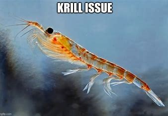

Last compiled on November, 2024 Description: Very cool lab journal. Yes, yes.
CTRL + ALT + I to make new chunks
ALT + MINUS makes <-
STR + SHIFT + M makes the %>%
STR + SHIFT + C can make a comment of multiple lines you highlighted
Everyone can fork this repository. I have used this example to journal my lab work and assignments.
Jochem Tolsma and Bas Hofstra use this repository for their Social Network Analysis For Social Scientists course (Tolsma and Hofstra 2022).

Very krillaxing, isn’t it?